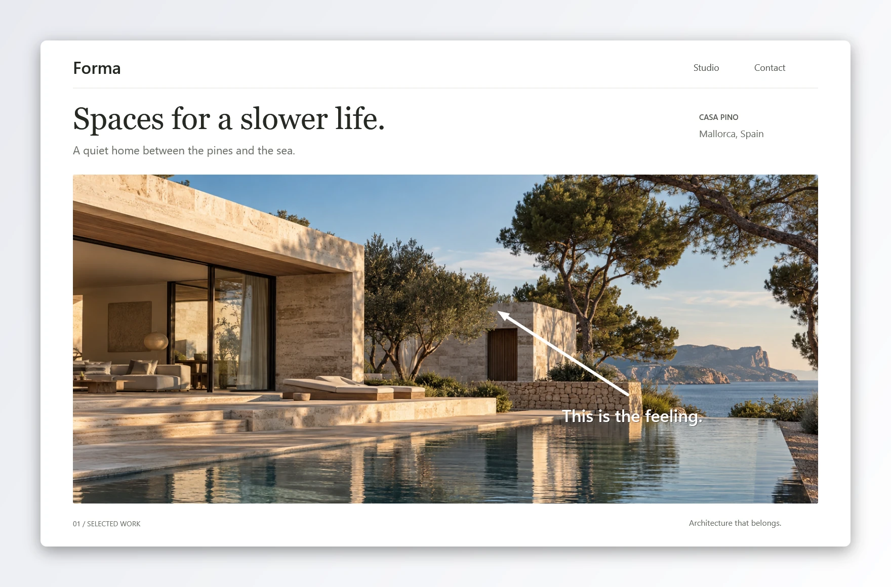
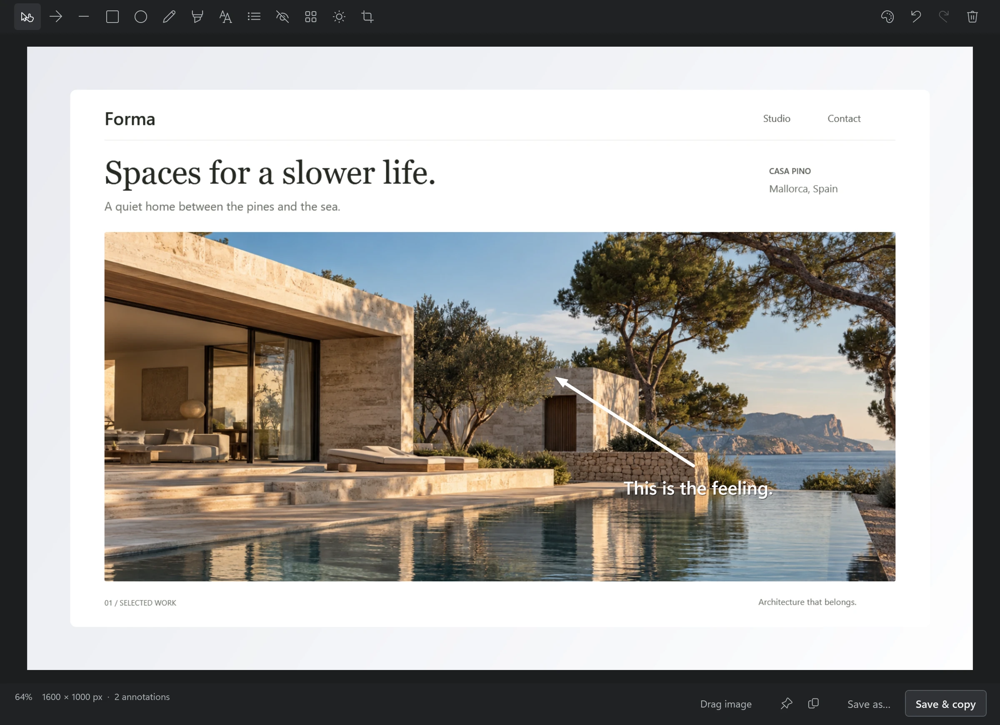
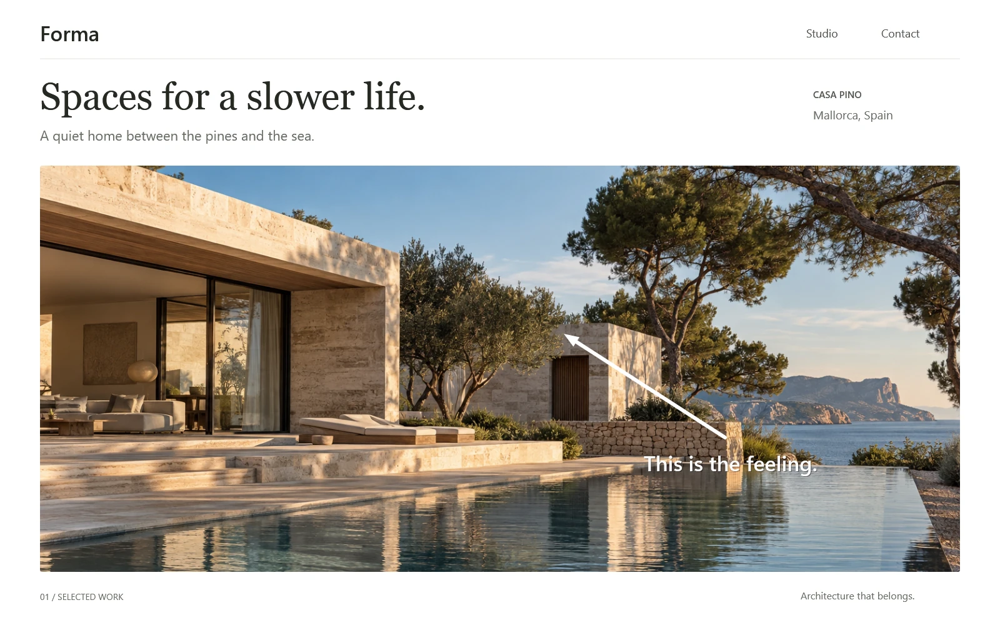

The whole story.
Capture scrolling pages,
from top to bottom.
FIELD NOTES ☰
A different
point of view.
Ideas worth looking at.
Room for
the details.

A FRESH TAKE ON SCREENSHOTS
Capture, annotate, record, and copy text.
All the little things you do every day.
Finally, in one simple Windows app.
14-day free trial · No card required
$30 once. Yours to keep. ↗
SMALL TOOL. FULL TOOLKIT.
Thoughtful tools. Fewer steps. A much clearer point.
Capture scrolling pages,
from top to bottom.
Ideas worth looking at.

Arrows, text, highlights, blur. Just what you need.

Copy words out of images.
Record what’s on your screen.
Pin a reference above your work.
A few of the ways to make your point. Explore all features →
RIGHT AT HOME ON YOUR DESKTOP
From the first capture
to the final detail.
Try Stillmark free for 14 days. No card. No account. Just start capturing.
Download for Windows$30 one-time purchase · One year of updates included
See license details →